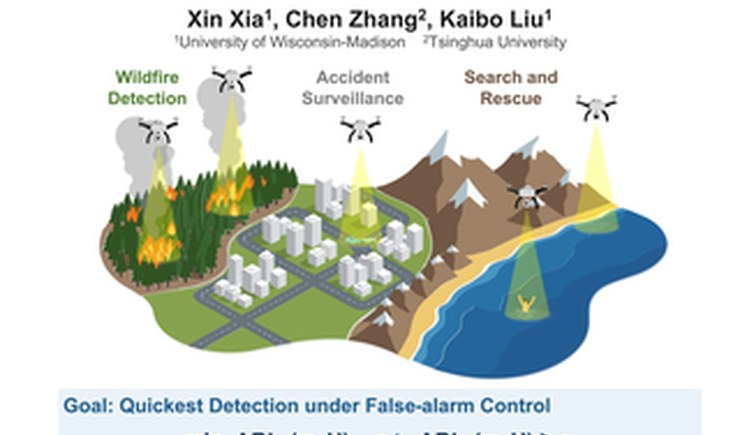
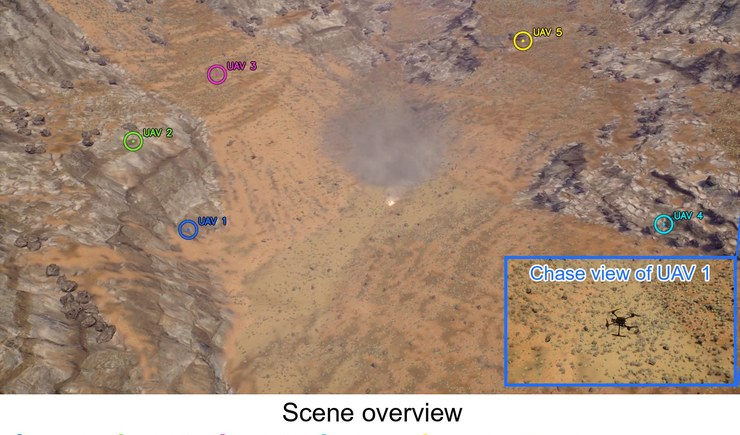
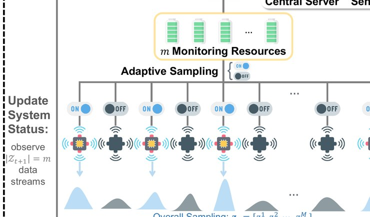
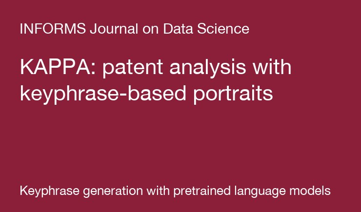
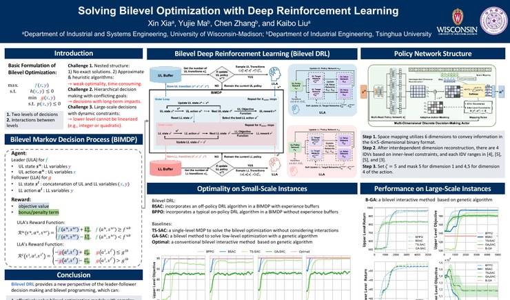
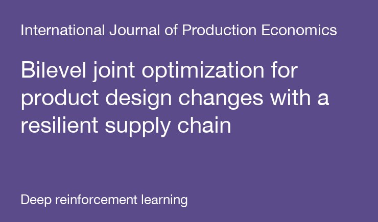
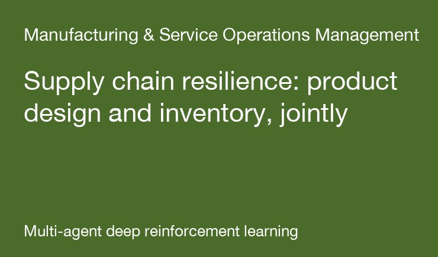
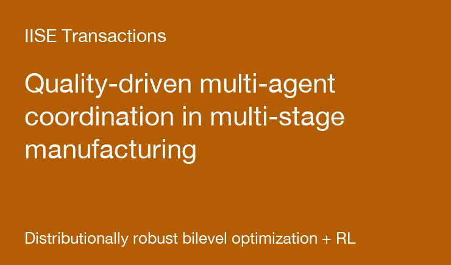
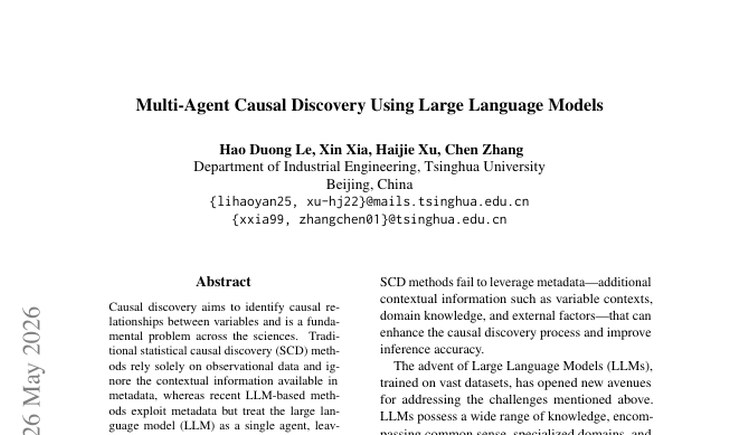

Learning Collision-Free Dispatch Policies for Route-Wise Decision-Dependent Anomaly Detection
Xin Xia, Chen Zhang, Kaibo Liu. NeurIPS, 2026.
A dispatch policy for UAV fleets that assigns destinations one vehicle at a time, so joint moves are collision-free by construction and decoded in linear time, with guarantees on coverage, focusing, and detection delay. Validated on the Robotarium and on a wildfire rebuilt from satellite frames.

SCAN: Networked Multi-Agent Reinforcement Learning for Decentralized Anomaly Detection in Graph-Structured Systems
Xin Xia, Kaibo Liu. INFORMS QSR Best Refereed Paper Award, 2026.
Each drone learns from its own evidence and a few messages from neighbours, moves safely under mobility constraints, and the team raises a calibrated alarm. Demonstrated on wildfire and traffic cases with a drone fleet in a 3D simulator.

Multi-Agent Reinforcement Learning for Anomaly Detection with Hierarchical Adaptive Sampling Strategy
Xin Xia, Jie Guo, Ziqian Zheng, Yujie Ma, Chen Zhang, Kaibo Liu. Technometrics, conditionally accepted. Finalist, IISE QCRE Best Track Paper Competition, 2025.
Limited monitoring resources are allocated across many data streams by a hierarchy of learned agents, so that the streams most likely to carry the change are observed first.

KAPPA: A Generic Patent Analysis Framework with Keyphrase-Based Portraits
Xin Xia, Yujin Wang, Jun Zhou, Guisheng Zhong, Linning Cai, Kaibo Liu, Chen Zhang. INFORMS Journal on Data Science, major revision.
Patents are summarised into keyphrase portraits generated by a pretrained language model, which then support retrieval, clustering, and trend analysis. Code: SetPLM.

A Deep Reinforcement Learning Method Solving Bilevel Optimization for Product Design Considering Remanufacturing
Yujie Ma, Xin Xia, Chen Zhang. IEEE Transactions on Engineering Management, 72, 573-590, 2025. paper
Product design as the leader and remanufacturing as the follower in a Stackelberg game, solved by a bilevel SAC algorithm (BSAC) with convergence and optimality guarantees.

Bilevel Joint Optimization for Product Design Changes with a Resilient Supply Chain Based on Deep Reinforcement Learning
Yujie Ma, Xin Xia, Peng Liu, Chen Zhang. International Journal of Production Economics, 290, 109791, 2025. paper
Design changes and the supply chain that must absorb them are optimised together under disruption risk.

Strengthening Supply Chain Resilience Through Coordinating Optimization of Product Design and Inventory Management
Yujie Ma, Xin Xia, Chen Zhang, Nan Chen. Manufacturing & Service Operations Management, submitted.
A multi-agent deep reinforcement learning approach in which each echelon learns to cooperate with its upstream and downstream neighbours.

Quality-Driven Multi-Agent Coordination in Multi-Stage Manufacturing Systems
Yujie Ma, Jie Guo, Xin Xia, Chen Zhang. IISE Transactions, under review.
A distributionally robust bilevel optimization framework with reinforcement learning for coordinating quality decisions across manufacturing stages.

Multi-Agent Causal Discovery Using Large Language Models
Hao Duong Le, Xin Xia, Haijie Xu, Chen Zhang. arXiv:2407.15073, 2024. arXiv
Several LLM agents with different roles debate and vote on causal edges, combining metadata with observational data.

Extractor-generator framework that brings T5 into the One2Set paradigm, with keyword-code control and keyword-based padding; state of the art on KP20K, Inspec, Krapivin, NUS, and SemEval.

Berth scheduling as the upper level and quay-crane assignment as the lower level, solved by a PPO-based algorithm that beats genetic algorithms, particle swarm optimization, and FIFO rules.

A Wasserstein DCGAN learns the joint behaviour of wind, photovoltaic, heating, and power subsystems; K-means picks typical scenarios for planning.